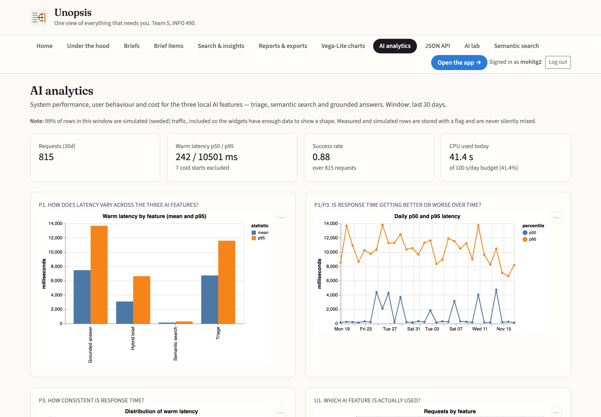
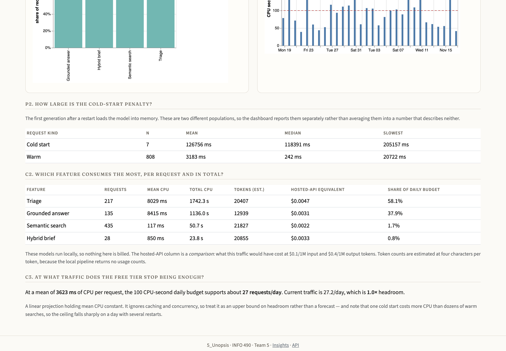

Shreenjoy Sengupta (joys3) · Team 5, Unopsis · INFO 490 — monitoring three local AI features: triage (Granite-3.3-2B), semantic search (MiniLM-L6-v2) and grounded answers.
Cost is measured in CPU-seconds, not dollars. These models run locally, so nothing is billed — but PythonAnywhere's free tier allows 100 CPU-seconds per day for the whole account, and exhausting it throttles the site. That is the real scarce resource, so it is the one the dashboard tracks. A hosted-API dollar equivalent is shown alongside for comparison.
| Question | Widget | Data required | Why this widget |
|---|---|---|---|
| P1 latency by feature | Grouped bar (mean & p95) | feature, latency_ms, warm only |
Mean and p95 side by side show the gap a single bar would hide. |
| P1/P3 trend | Line chart, daily p50 & p95 | created_at, latency_ms |
Two lines make a widening spread visible as it happens. |
| P2 cold start | Summary table, cold vs warm | cold_start, latency_ms |
Two populations, reported separately rather than averaged. |
| P3 consistency | Histogram of warm latency | latency_ms, binned |
Consistency is a shape; a single number cannot show bimodality. |
| U1 usage | Bar by feature + bar by hour | feature, created_at |
Separates what is used from when. |
| U2 intent | Horizontal bar, top terms | query_text (search only), stopwords removed |
Ranked categories read better horizontally. |
| U3 outcomes | 100% stacked bar by feature | status × feature |
Normalising compares failure rates, not volumes. |
| C1 budget | Bar + budget rule line | daily SUM(cpu_ms) |
CPU seconds mean nothing without the ceiling drawn on the same axis. |
| C2/C3 cost | Cost table + headroom metric | cpu_ms, token estimates, request counts |
Per-request and total differ; a table shows both without a misleading chart. |
| All, at a glance | 4 summary metric cards | rollups of the above | Answers "is anything wrong right now" before any chart is read. |


What the dashboard already revealed. Triage and grounded answers consume ~96% of CPU while semantic search — the most-used feature — costs 117 ms per request. At the observed mean of 3.62 CPU-seconds per request, the free tier supports roughly 27 requests/day, i.e. about 1× current traffic: local LLM generation is not viable on this host at any real volume, while search effectively is free. It also caught a bug in its own instrumentation — a cold-start median of 1 ms, which is impossible — traced to counting rule-based fallbacks as model loads.
Live: /analytics/ on the deployed site (login required).
Test account mohitg2 / uiuc12345. Code:
unopsis/analytics.py, analytics_views.py, ai/telemetry.py,
28 dedicated tests in tests_analytics.py.